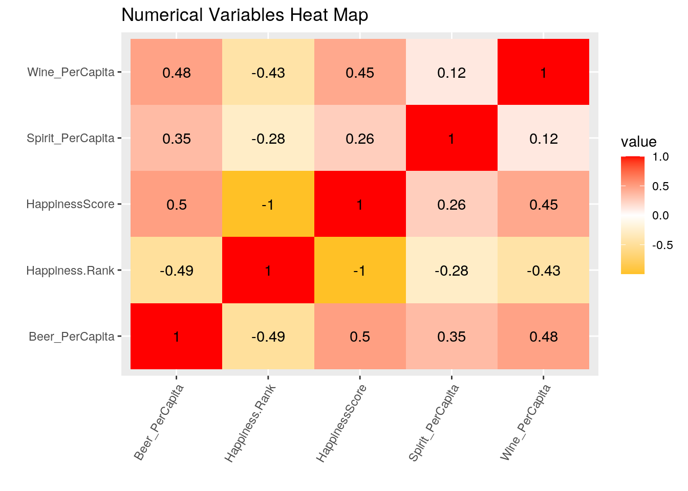
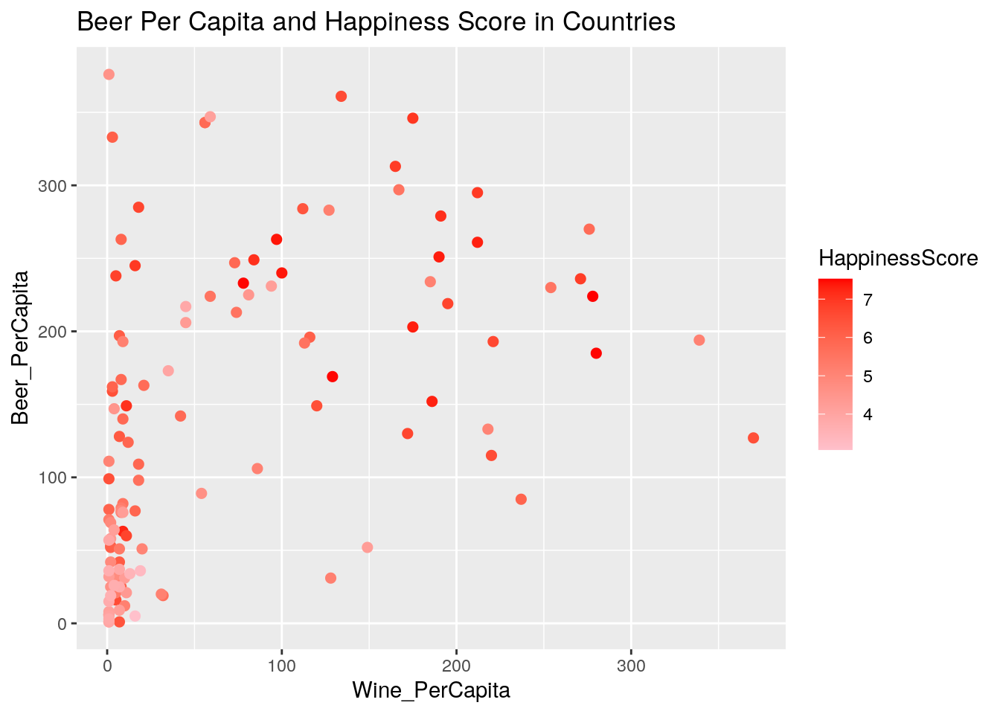
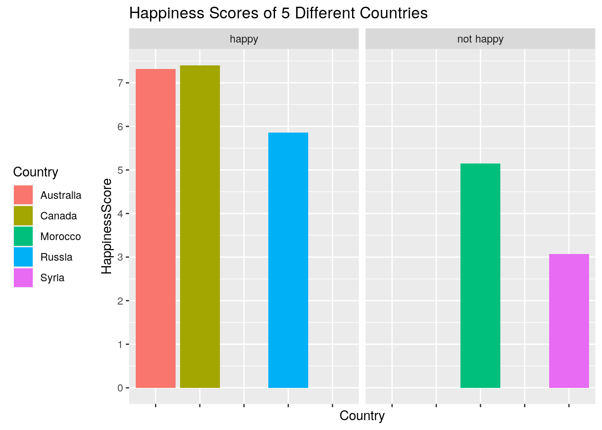
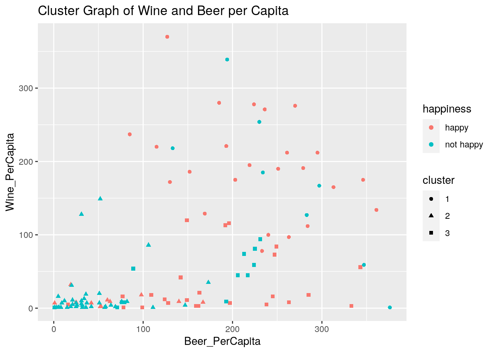

The two datasets I have chosen were the happiness scale numbers of countries and the alcohol consumption that corresponds to those countries to see if there is a correlation between the two. The variables within this are the country, the happines ranking, the happiness score, and the alcohol consumption per capita. The alcohol consumption per capita is divided in three sections: beer, spirits, and wine. I picked this because I knew about the happiest countries and also how alcohol is a depressant, so I am wondering how their alcohol consumption will impact their emotions causing a decrease or increase in happiness. I feel if there is any association, it will be that the countries that drink the least are the most happiest in the long run.
First because my datasets were already tidy, I had to untidy them.I first created a variable, happy, that I then would untidy with the pivot_wider function. I had to repeat this process for my second dataset. I then joined the datasets using the full_join dplyr join function. I joined based off of the Country common variable, but before this some of the data had to be removed a tad bit because there were countries on one dataset that wasn't on the other. This actually helped because the data is now aligned with the respective countries.
HappinessAlcoholConsumption <- read.csv("HappinessAlcoholConsumption.csv")
X2016 <- read.csv("2016.csv")library("tidyverse")## ── Attaching packages ────────────────────────────────────── tidyverse 1.3.0 ──## ✓ ggplot2 3.3.2 ✓ purrr 0.3.4
## ✓ tibble 3.0.3 ✓ dplyr 1.0.2
## ✓ tidyr 1.1.1 ✓ stringr 1.4.0
## ✓ readr 1.3.1 ✓ forcats 0.5.0## ── Conflicts ───────────────────────────────────────── tidyverse_conflicts() ──
## x dplyr::filter() masks stats::filter()
## x dplyr::lag() masks stats::lag()library(tidyr)
library(dplyr)
# Dataset 1:
happy <- HappinessAlcoholConsumption %>% select(Country:Wine_PerCapita) %>%
na.omit()
untidyhappy <- happy %>% pivot_wider(names_from = "Country",
values_from = "Beer_PerCapita")
tidyhappy <- untidyhappy %>% pivot_longer(cols = c(5:126), names_to = "Country",
values_to = "Beer_PerCapita") %>% na.omit()
tidyhappy## # A tibble: 122 x 6
## Region Hemisphere Spirit_PerCapita Wine_PerCapita Country Beer_PerCapita
## <fct> <fct> <int> <int> <chr> <int>
## 1 Western Eu… north 81 278 Denmark 224
## 2 Western Eu… north 100 280 Switze… 185
## 3 Western Eu… north 61 78 Iceland 233
## 4 Western Eu… north 71 129 Norway 169
## 5 Western Eu… north 133 97 Finland 263
## 6 North Amer… north 122 100 Canada 240
## 7 Western Eu… north 88 190 Nether… 251
## 8 Australia … south 79 175 New Ze… 203
## 9 Australia … south 72 212 Austra… 261
## 10 Western Eu… north 60 186 Sweden 152
## # … with 112 more rows# Dataset 2:
X2016 %>% select(Country:HappinessScore) %>% na.omit()## Country Region Happiness.Rank HappinessScore
## 1 Denmark Western Europe 1 7.526
## 2 Switzerland Western Europe 2 7.509
## 3 Iceland Western Europe 3 7.501
## 4 Norway Western Europe 4 7.498
## 5 Finland Western Europe 5 7.413
## 6 Canada North America 6 7.404
## 7 Netherlands Western Europe 7 7.339
## 8 New Zealand Australia and New Zealand 8 7.334
## 9 Australia Australia and New Zealand 9 7.313
## 10 Sweden Western Europe 10 7.291
## 11 Israel Middle East and Northern Africa 11 7.267
## 12 Austria Western Europe 12 7.119
## 13 United States North America 13 7.104
## 14 Costa Rica Latin America and Caribbean 14 7.087
## 15 Germany Western Europe 16 6.994
## 16 Brazil Latin America and Caribbean 17 6.952
## 17 Belgium Western Europe 18 6.929
## 18 Ireland Western Europe 19 6.907
## 19 Luxembourg Western Europe 20 6.871
## 20 Mexico Latin America and Caribbean 21 6.778
## 21 Singapore Southeastern Asia 22 6.739
## 22 United Kingdom Western Europe 23 6.725
## 23 Chile Latin America and Caribbean 24 6.705
## 24 Panama Latin America and Caribbean 25 6.701
## 25 Argentina Latin America and Caribbean 26 6.650
## [ reached 'max' / getOption("max.print") -- omitted 97 rows ]untidyx2016 <- X2016 %>% pivot_wider(names_from = "Country",
values_from = "Happiness.Rank")
tidyx2016 <- untidyx2016 %>% pivot_longer(cols = c(3:124), names_to = "Country",
values_to = "Happiness Rank") %>% na.omit()
tidyx2016## # A tibble: 122 x 4
## Region HappinessScore Country `Happiness Rank`
## <fct> <dbl> <chr> <int>
## 1 Western Europe 7.53 Denmark 1
## 2 Western Europe 7.51 Switzerland 2
## 3 Western Europe 7.50 Iceland 3
## 4 Western Europe 7.50 Norway 4
## 5 Western Europe 7.41 Finland 5
## 6 North America 7.40 Canada 6
## 7 Western Europe 7.34 Netherlands 7
## 8 Australia and New Zealand 7.33 New Zealand 8
## 9 Australia and New Zealand 7.31 Australia 9
## 10 Western Europe 7.29 Sweden 10
## # … with 112 more rows# In order to join:
fulldata <- X2016 %>% full_join(happy) %>% na.omit()## Joining, by = c("Country", "Region")fulldata## Country Region Happiness.Rank HappinessScore
## 1 Denmark Western Europe 1 7.526
## 2 Switzerland Western Europe 2 7.509
## 3 Iceland Western Europe 3 7.501
## 4 Norway Western Europe 4 7.498
## 5 Finland Western Europe 5 7.413
## 6 Canada North America 6 7.404
## 7 Netherlands Western Europe 7 7.339
## 8 New Zealand Australia and New Zealand 8 7.334
## 9 Australia Australia and New Zealand 9 7.313
## 10 Sweden Western Europe 10 7.291
## 11 Israel Middle East and Northern Africa 11 7.267
## 12 Austria Western Europe 12 7.119
## Hemisphere Beer_PerCapita Spirit_PerCapita Wine_PerCapita
## 1 north 224 81 278
## 2 north 185 100 280
## 3 north 233 61 78
## 4 north 169 71 129
## 5 north 263 133 97
## 6 north 240 122 100
## 7 north 251 88 190
## 8 south 203 79 175
## 9 south 261 72 212
## 10 north 152 60 186
## 11 north 63 69 9
## 12 north 279 75 191
## [ reached 'max' / getOption("max.print") -- omitted 109 rows ]The dataset was manipulated using dylpr functions: filter, select, arrange, group_by, mutate, and summarize. I started off by filtering each country by their hemisphere to compare the scores and see if north or south is happier, I then did select() to conclude that more countries with higher scores have higher beer per capita rates. Following that, I used arrange to arrange by region in order to show that Western Europe has higher happiness scores. I then created a new categorical variable that determine if a country was happy or not depending on happiness scores. I then mutated this data with the categorical variable and showed its average in the new data set created. Finally, I summarized and grouped by the country name and showing if their country is considered happy or not. Based of the results of these summary statistics, the max wine and beer per capita is 370 and 376 respectively along with their minimums being 1. The mean wine and beer per capita is 66.63 and 136.38. But, the standard deviation of these is 88.49 and 104.43.Also, spirits per capita standard deviation is 81.04. The n_distinct of wine and beer per capita is 65 and 99. The minimum spirit per capita is 1. Lastly, the mean spirit per capita is 95.61.
fulldata %>% filter(Hemisphere == "north")## Country Region Happiness.Rank HappinessScore
## 1 Denmark Western Europe 1 7.526
## 2 Switzerland Western Europe 2 7.509
## 3 Iceland Western Europe 3 7.501
## 4 Norway Western Europe 4 7.498
## 5 Finland Western Europe 5 7.413
## 6 Canada North America 6 7.404
## 7 Netherlands Western Europe 7 7.339
## 8 Sweden Western Europe 10 7.291
## 9 Israel Middle East and Northern Africa 11 7.267
## 10 Austria Western Europe 12 7.119
## 11 United States North America 13 7.104
## 12 Costa Rica Latin America and Caribbean 14 7.087
## Hemisphere Beer_PerCapita Spirit_PerCapita Wine_PerCapita
## 1 north 224 81 278
## 2 north 185 100 280
## 3 north 233 61 78
## 4 north 169 71 129
## 5 north 263 133 97
## 6 north 240 122 100
## 7 north 251 88 190
## 8 north 152 60 186
## 9 north 63 69 9
## 10 north 279 75 191
## 11 north 249 158 84
## 12 north 149 87 11
## [ reached 'max' / getOption("max.print") -- omitted 79 rows ]fulldata %>% select(Country, HappinessScore, Beer_PerCapita)## Country HappinessScore Beer_PerCapita
## 1 Denmark 7.526 224
## 2 Switzerland 7.509 185
## 3 Iceland 7.501 233
## 4 Norway 7.498 169
## 5 Finland 7.413 263
## 6 Canada 7.404 240
## 7 Netherlands 7.339 251
## 8 New Zealand 7.334 203
## 9 Australia 7.313 261
## 10 Sweden 7.291 152
## 11 Israel 7.267 63
## 12 Austria 7.119 279
## 13 United States 7.104 249
## 14 Costa Rica 7.087 149
## 15 Germany 6.994 346
## 16 Brazil 6.952 245
## 17 Belgium 6.929 295
## 18 Ireland 6.907 313
## 19 Luxembourg 6.871 236
## 20 Mexico 6.778 238
## 21 Singapore 6.739 60
## 22 United Kingdom 6.725 219
## 23 Chile 6.705 130
## 24 Panama 6.701 285
## 25 Argentina 6.650 193
## 26 Czech Republic 6.596 361
## 27 United Arab Emirates 6.573 16
## 28 Uruguay 6.545 115
## 29 Malta 6.488 149
## 30 Colombia 6.481 159
## 31 France 6.478 127
## 32 Thailand 6.474 99
## 33 Qatar 6.375 1
## [ reached 'max' / getOption("max.print") -- omitted 88 rows ]fulldata %>% arrange(Region)## Country Region Happiness.Rank HappinessScore
## 1 New Zealand Australia and New Zealand 8 7.334
## 2 Australia Australia and New Zealand 9 7.313
## 3 Czech Republic Central and Eastern Europe 27 6.596
## 4 Slovakia Central and Eastern Europe 45 6.078
## 5 Uzbekistan Central and Eastern Europe 49 5.987
## 6 Kazakhstan Central and Eastern Europe 54 5.919
## 7 Moldova Central and Eastern Europe 55 5.897
## 8 Russia Central and Eastern Europe 56 5.856
## 9 Poland Central and Eastern Europe 57 5.835
## 10 Lithuania Central and Eastern Europe 60 5.813
## 11 Belarus Central and Eastern Europe 61 5.802
## 12 Slovenia Central and Eastern Europe 63 5.768
## Hemisphere Beer_PerCapita Spirit_PerCapita Wine_PerCapita
## 1 south 203 79 175
## 2 south 261 72 212
## 3 north 361 170 134
## 4 north 196 293 116
## 5 north 25 101 8
## 6 north 124 246 12
## 7 north 109 226 18
## 8 north 247 326 73
## 9 north 343 215 56
## 10 north 343 244 56
## 11 north 142 373 42
## 12 north 270 51 276
## [ reached 'max' / getOption("max.print") -- omitted 109 rows ]fulldatax <- fulldata[!is.na(fulldata$Happiness.Rank), ]
fulldatax$happiness <- ifelse(fulldatax$Happiness.Rank < median(fulldatax$Happiness.Rank),
"happy", "not happy")
happiness <- fulldatax$happiness
fulldatax## Country Region Happiness.Rank HappinessScore
## 1 Denmark Western Europe 1 7.526
## 2 Switzerland Western Europe 2 7.509
## 3 Iceland Western Europe 3 7.501
## 4 Norway Western Europe 4 7.498
## 5 Finland Western Europe 5 7.413
## 6 Canada North America 6 7.404
## 7 Netherlands Western Europe 7 7.339
## 8 New Zealand Australia and New Zealand 8 7.334
## 9 Australia Australia and New Zealand 9 7.313
## 10 Sweden Western Europe 10 7.291
## 11 Israel Middle East and Northern Africa 11 7.267
## Hemisphere Beer_PerCapita Spirit_PerCapita Wine_PerCapita happiness
## 1 north 224 81 278 happy
## 2 north 185 100 280 happy
## 3 north 233 61 78 happy
## 4 north 169 71 129 happy
## 5 north 263 133 97 happy
## 6 north 240 122 100 happy
## 7 north 251 88 190 happy
## 8 south 203 79 175 happy
## 9 south 261 72 212 happy
## 10 north 152 60 186 happy
## 11 north 63 69 9 happy
## [ reached 'max' / getOption("max.print") -- omitted 110 rows ]fulldatax %>% group_by(happiness)## # A tibble: 121 x 9
## # Groups: happiness [2]
## Country Region Happiness.Rank HappinessScore Hemisphere Beer_PerCapita
## <fct> <fct> <int> <dbl> <fct> <int>
## 1 Denmark Weste… 1 7.53 north 224
## 2 Switze… Weste… 2 7.51 north 185
## 3 Iceland Weste… 3 7.50 north 233
## 4 Norway Weste… 4 7.50 north 169
## 5 Finland Weste… 5 7.41 north 263
## 6 Canada North… 6 7.40 north 240
## 7 Nether… Weste… 7 7.34 north 251
## 8 New Ze… Austr… 8 7.33 south 203
## 9 Austra… Austr… 9 7.31 south 261
## 10 Sweden Weste… 10 7.29 north 152
## # … with 111 more rows, and 3 more variables: Spirit_PerCapita <int>,
## # Wine_PerCapita <int>, happiness <chr>fulldatax1 <- fulldatax %>% mutate(average = HappinessScore/Beer_PerCapita)
fulldatax1## Country Region Happiness.Rank HappinessScore
## 1 Denmark Western Europe 1 7.526
## 2 Switzerland Western Europe 2 7.509
## 3 Iceland Western Europe 3 7.501
## 4 Norway Western Europe 4 7.498
## 5 Finland Western Europe 5 7.413
## 6 Canada North America 6 7.404
## 7 Netherlands Western Europe 7 7.339
## 8 New Zealand Australia and New Zealand 8 7.334
## 9 Australia Australia and New Zealand 9 7.313
## 10 Sweden Western Europe 10 7.291
## Hemisphere Beer_PerCapita Spirit_PerCapita Wine_PerCapita happiness
## 1 north 224 81 278 happy
## 2 north 185 100 280 happy
## 3 north 233 61 78 happy
## 4 north 169 71 129 happy
## 5 north 263 133 97 happy
## 6 north 240 122 100 happy
## 7 north 251 88 190 happy
## 8 south 203 79 175 happy
## 9 south 261 72 212 happy
## 10 north 152 60 186 happy
## average
## 1 0.03359821
## 2 0.04058919
## 3 0.03219313
## 4 0.04436686
## 5 0.02818631
## 6 0.03085000
## 7 0.02923904
## 8 0.03612808
## 9 0.02801916
## 10 0.04796711
## [ reached 'max' / getOption("max.print") -- omitted 111 rows ]summary <- fulldata %>% summarize(meanhappiness = mean(HappinessScore,
na.rm = T), n_rows = n(), n_country = n_distinct(Country))
summary## meanhappiness n_rows n_country
## 1 5.524537 121 121fulldatax %>% summary()## Country Region Happiness.Rank
## Albania : 1 Sub-Saharan Africa :28 Min. : 1.00
## Angola : 1 Central and Eastern Europe :26 1st Qu.: 32.00
## Argentina: 1 Latin America and Caribbean :23 Median : 70.00
## Armenia : 1 Western Europe :20 Mean : 73.46
## Australia: 1 Middle East and Northern Africa:11 3rd Qu.:114.00
## Austria : 1 Southeastern Asia : 5 Max. :156.00
## (Other) :115 (Other) : 8
## HappinessScore Hemisphere Beer_PerCapita Spirit_PerCapita Wine_PerCapita
## Min. :3.069 both : 5 Min. : 1.0 Min. : 1.00 Min. : 1.00
## 1st Qu.:4.513 north:91 1st Qu.: 37.0 1st Qu.: 25.00 1st Qu.: 5.00
## Median :5.538 noth : 4 Median :124.0 Median : 81.00 Median : 16.00
## Mean :5.525 south:21 Mean :136.4 Mean : 95.61 Mean : 66.64
## 3rd Qu.:6.478 3rd Qu.:224.0 3rd Qu.:135.00 3rd Qu.:113.00
## Max. :7.526 Max. :376.0 Max. :373.00 Max. :370.00
##
## happiness
## Length:121
## Class :character
## Mode :character
##
##
##
## fulldatax %>% group_by(Country, happiness) %>% summarize(mean(HappinessScore))## `summarise()` regrouping output by 'Country' (override with `.groups` argument)## # A tibble: 121 x 3
## # Groups: Country [121]
## Country happiness `mean(HappinessScore)`
## <fct> <chr> <dbl>
## 1 Albania not happy 4.66
## 2 Angola not happy 3.87
## 3 Argentina happy 6.65
## 4 Armenia not happy 4.36
## 5 Australia happy 7.31
## 6 Austria happy 7.12
## 7 Azerbaijan not happy 5.29
## 8 Bahrain happy 6.22
## 9 Belarus happy 5.80
## 10 Belgium happy 6.93
## # … with 111 more rowsfulldatax %>% group_by(happiness, Wine_PerCapita) %>% summarize(mean(Beer_PerCapita))## `summarise()` regrouping output by 'happiness' (override with `.groups` argument)## # A tibble: 73 x 3
## # Groups: happiness [2]
## happiness Wine_PerCapita `mean(Beer_PerCapita)`
## <chr> <int> <dbl>
## 1 happy 1 88.5
## 2 happy 2 52.5
## 3 happy 3 218
## 4 happy 5 127
## 5 happy 7 92
## 6 happy 8 152.
## 7 happy 9 102.
## 8 happy 11 104.
## 9 happy 12 124
## 10 happy 16 161
## # … with 63 more rowsfulldatax %>% summarize(max(Wine_PerCapita), max(Beer_PerCapita))## max(Wine_PerCapita) max(Beer_PerCapita)
## 1 370 376fulldatax %>% summarize(mean(Wine_PerCapita), mean(Beer_PerCapita))## mean(Wine_PerCapita) mean(Beer_PerCapita)
## 1 66.63636 136.3802fulldatax %>% summarize(sd(Wine_PerCapita), sd(Beer_PerCapita))## sd(Wine_PerCapita) sd(Beer_PerCapita)
## 1 88.48691 104.4288fulldatax %>% summarize(n_distinct(Wine_PerCapita), n_distinct(Beer_PerCapita))## n_distinct(Wine_PerCapita) n_distinct(Beer_PerCapita)
## 1 65 99fulldatax %>% summarize(min(Wine_PerCapita), min(Spirit_PerCapita))## min(Wine_PerCapita) min(Spirit_PerCapita)
## 1 1 1fulldatax %>% summarize(min(Beer_PerCapita), min(Spirit_PerCapita))## min(Beer_PerCapita) min(Spirit_PerCapita)
## 1 1 1fulldatax %>% summarize(sd(Wine_PerCapita), sd(Spirit_PerCapita))## sd(Wine_PerCapita) sd(Spirit_PerCapita)
## 1 88.48691 81.03789fulldatax %>% summarize(mean(Spirit_PerCapita), mean(Beer_PerCapita))## mean(Spirit_PerCapita) mean(Beer_PerCapita)
## 1 95.61157 136.3802Using ggplot2, I was able to create a heatmap and two seperate plots. The first plot I created was a plot showing the wine per capita in relatin to the beer per capita and showing the happiness scores of those respective countries. It shows that the higher scores are spread out, but have more beer and wine per capita than those with lower scores. Next, I created a plot to show the countries that are considered "happy"" or "not happy" from creating the categorical variable previously. The plot showed the happiness scores of each of the five countries that I picked. You are able to see the cuttoff where a country is considered to be "not happy".
library(ggplot2)
fulldatax %>% select_if(is.numeric) %>% cor %>% as.data.frame %>%
rownames_to_column %>% pivot_longer(-1) %>% ggplot(aes(rowname,
name, fill = value)) + geom_tile() + geom_text(aes(label = round(value,
2))) + xlab("") + ylab("") + scale_fill_gradient2(high = "red",
low = "goldenrod1") + theme(axis.text.x = element_text(angle = 60,
hjust = 1)) + ggtitle("Numerical Variables Heat Map")
fulldatax %>% ggplot(aes(x = Wine_PerCapita, y = Beer_PerCapita)) +
geom_point(size = 2, aes(color = HappinessScore)) + scale_color_gradient(low = "pink",
high = "red") + ggtitle("Beer Per Capita and Happiness Score in Countries") +
xlab("Wine_PerCapita") + scale_y_continuous(breaks = seq(0,
400, 100)) + scale_x_continuous(breaks = seq(0, 300, 100))
fulldatax %>% filter(Country == "Canada" | Country == "Australia" |
Country == "Morocco" | Country == "Russia" | Country == "Syria") %>%
ggplot(aes(x = Country, y = HappinessScore, fill = Country)) +
geom_bar(stat = "summary", fun.y = "mean", position = "dodge") +
facet_wrap(~happiness) + ggtitle("Happiness Scores of 5 Different Countries") +
theme(axis.text.x = element_blank(), legend.position = "left") +
scale_y_continuous(breaks = seq(0, 8, 1))## No summary function supplied, defaulting to `mean_se()`
## No summary function supplied, defaulting to `mean_se()`
After creating this cluster graph below, there is a heavily concentrated area in the bottom left of the cluster graph. This concludes that higher Wine and Beer per capita is a factor that leads to these countries having higher happiness scores and being considered happy according to the categorical variables created. In difference, the unhappy countries are those that tend to have lower beer and wine per capita.
library(cluster)
pamx <- fulldatax %>% pam(k = 3)
pamx## Medoids:
## ID Country Region Happiness.Rank HappinessScore Hemisphere Beer_PerCapita
## 7 7 77 9 7 7.339 2 251
## 96 95 58 8 122 4.356 1 58
## 57 57 85 4 64 5.743 1 163
## Spirit_PerCapita Wine_PerCapita happiness
## 7 88 190 NA
## 96 22 2 NA
## 57 160 21 NA
## Clustering vector:
## 1 2 3 4 5 6 7 8 9 10 11 12 13 14 15 16 17 18 19 20
## 1 1 1 1 1 1 1 1 1 1 2 1 3 3 1 3 1 1 1 3
## 21 22 23 24 25 26 27 28 29 30 31 32 33 34 35 36 37 38 39 40
## 2 1 1 3 1 1 3 1 3 3 1 3 2 1 2 3 2 3 3 3
## 41 42 43 44 45 46 47 48 49 50 51 52 53 54 55 56 57 58 59 61
## 2 3 2 1 3 3 3 3 3 3 3 2 2 3 3 1 3 2 2 3
## 62 63 64 65 66 67 68 69 70 71 72 73 74 75 76 77 78 79 80 81
## 3 1 3 2 1 2 2 2 3 3 2 1 3 2 3 2 1 2 1 2
## 82 83 84 85 86 87 88 89 90 91 92 93 94 95 96 97 98 99 100 101
## 2 2 1 3 2 2 2 3 2 1 2 3 2 2 2 3 2 2 2 2
## [ reached getOption("max.print") -- omitted 21 entries ]
## Objective function:
## build swap
## 116.4314 112.5092
##
## Available components:
## [1] "medoids" "id.med" "clustering" "objective" "isolation"
## [6] "clusinfo" "silinfo" "diss" "call" "data"clusters <- fulldatax %>% mutate(cluster = as.factor(pamx$clustering))
clusters %>% ggplot(aes(Beer_PerCapita, Wine_PerCapita, color = happiness,
shape = cluster)) + geom_point() + ggtitle("Cluster Graph of Wine and Beer per Capita")
Note that the echo = FALSE parameter was added to the code chunk to prevent printing of the R code that generated the plot.